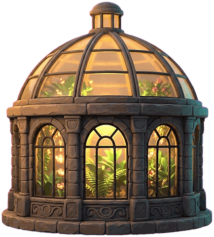
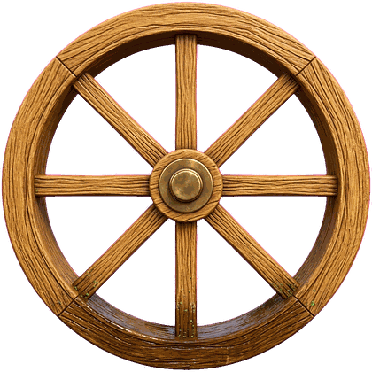
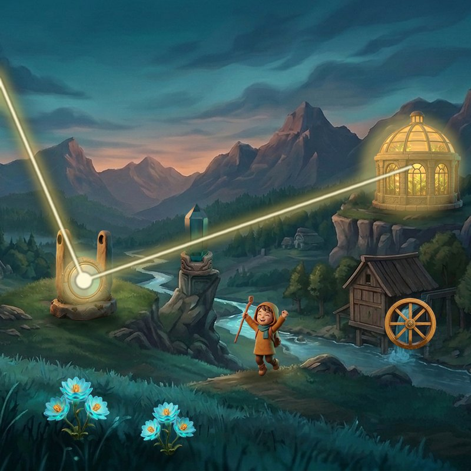

מסירה 1 (לפני כתיבת קוד המשחק): הרקע (
bg.jpg, 2560×1429) נקי ממראה, גביש, גלגל טחנה, דמות וקרניים. כל עצם שהילד נוגע בו או שמתעורר לחיים הוא חיתוך PNG חד ב-2× ללא טשטוש וללא מונחים טכניים. בכל אחד מ-4 השלבים למטה אפשר לעבור בין תחילת סיבוב (התשובה לא מוצגת מראש; הקרן פוגעת בסלעים) לבין רגע התשובה הנכונה (גלגל הטחנה מסתובב, החממה נדלקת, הפרחים נפתחים והמטייל מריע).
שלב 1 — מראה (Mirror)
רעיון אחד: כיוון מראה אחת אל יעד אחד
לפטופ (1280×800) — מסך מלא
לחיצה/סיבוב של פני המראה אל החממה






טלפון לאורך (390×844)
מראה + חממה יחד במסך
🔊 הילד שומע: ״כוונו את המראה כדי להאיר את החממה!״ (ובסיבובים אחרים: ״כוונו את המראה אל טחנת המים!״)
שלב 2 — גביש (Crystal)
רעיון אחד: שליחת הקרן דרך הגביש אל היעד
לפטופ (1280×800) — הקרן עוברת דרך הגביש אל טחנת המים
גלגל הטחנה מסתובב כשהאור מגיע


טלפון לאורך (390×844)
מראה, גביש וטחנה במסך
🔊 הילד שומע: ״סובבו את הגביש הזוהר כדי לשלוח את האור אל טחנת המים!״
שלב 3 — שני יעדים (Two Places)
רעיון אחד: פיצול האור בגביש כדי להאיר יחד את החממה ואת טחנת המים
לפטופ (1280×800) — הגביש מפצל את הקרן לשני המקומות יחד
בלי מספרים או יחסים על המסך — רק אור בהיר
טלפון לאורך (390×844)
שני היעדים נדלקים יחד
🔊 הילד שומע: ״פצלו את האור בגביש כדי להאיר גם את החממה וגם את טחנת המים!״
שלב 4 — כל העמק (The Whole Valley)
שילוב של שלושת השלבים — משימה אקראית בכל סיבוב
לפטופ (1280×800) — כיוון המראה והגביש יחד
בתחילת הסיבוב גם המראה וגם הגביש בזווית אקראית
טלפון לאורך (390×844)
כל העמק מתעורר לחיים
🔊 הילד שומע: ״כוונו את המראה ואת הגביש כדי להאיר את כל העמק!״
עטיפת המשחק (cover.jpg · 800×800) והרקע הנקי (bg.jpg · 2560×1429)
ללא טקסט · מורכב מאמנות המשחק עצמו
כל חיתוכי ה-PNG השקופים (בדיקת שוליים על רקע כהה ובהיר)
12 קובצי PNG · כולם מתחת ל-150 KB · גודל 2×